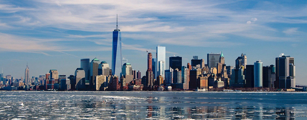
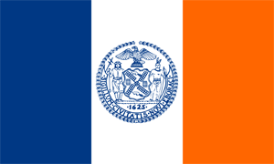
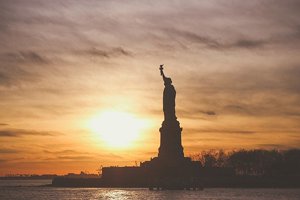
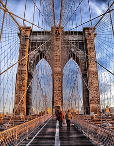
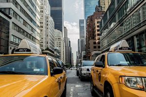

Il y a quelque chose dans l'air de New York qui rend le sommeil inutile.
Simone de Beauvoir

Le drapeau de New York se compose de bandes verticales bleue, blanche et orange, de largeur égale, les mêmes couleurs que le drapeau des Provinces-Unies tel qu'il était utilisé en 1625, l'année où Manhattan fut colonisée.En son centre est reproduit, en bleu, le sceau de la ville. Sur ce dernier figurent plusieurs éléments symboliques :

Située sur la Liberty Island, au sud de Manhattan à l'embouchure de l'Hudson et à proximité d'Ellis Island. Son véritable nom est Liberty Enlightening the World, en français La Liberté éclairant le monde, mais est plus connue sous le nom de statue de la Liberté (Statue of Liberty).Pesant 204 tonnes et mesurant 92,9 mètres, elle est construite en France et offerte par le peuple français, en signe d'amitié entre les deux nations et pour célébrer le centenaire de la Déclaration d'indépendance américaine.
La statue fut dévoilée au grand jour le 28 octobre 1886 en présence du président des États-Unis de l'époque, Grover Cleveland. L'idée est en général attribuée au juriste et professeur au Collège de France Édouard de Laboulaye. Le projet fut confié, en 1871, au sculpteur français Auguste Bartholdi.
En raison de son statut de monument universel, la statue de la Liberté a été copiée et reproduite à différentes échelles et en divers endroits du globe. n'en compte de nombreuses en France, la plus connue étant celle située à l'extrémité de l'île aux Cygnes à la hauteur du pont de Grenelle, près de l'ancien atelier de Bartholdi, qui est haute de 11,50 m. D'autres répliques sont également disséminées de part le monde : à Las Vegas, au Japon, en Espagne, au Kosovo ...

La ville s'étend sur plusieurs îles : la plus peuplée est celle de Manhattan où se trouve le cœur économique et culturel de l'agglomération. Governors Island, Liberty Island et Ellis Island sont de petites îles au sud de Manhattan dont les lieux historiques sont visités par les touristes. Staten Island est l'île la plus au sud de New York. Les arrondissements de Brooklyn et Queens occupent la partie occidentale de Long Island alors que le Bronx se trouve sur le continent, dans le Sud d'une presqu'île.Cette configuration insulaire nécessite la présence de nombreux ponts et tunnels qui relient les différentes parties de l'agglomération. Un service de traversiers permet également aux New-Yorkais de se déplacer facilement. Plusieurs détroits comme le Long Island Sound ou The Narrows séparent les différentes îles. Les eaux profondes de la baie de New York et les côtes très découpées fournissent de nombreuses autres petites baies abritées. Le site de New York apparaît à la fois comme un atout (ouverture maritime, défense naturelle) mais aussi comme un risque (inondations, élévation de la mer, raz-de-marée) pour la métropole.

La ville de New York est la ville la plus peuplée des États-Unis, avec une population deux fois supérieure à la deuxième ville du pays, Los Angeles (3 743 995 habitants).
Elle compte en effet 8 175 133 habitants en 2010, ce qui représente près de 40 % de la population de l'État de New York. Le Grand New York ou New York Metropolitan area est l'aire urbaine la plus peuplée des États-Unis et la troisième du monde derrière Tokyo et Mexico.
Cette région s'étend sur quatre États (New York, New Jersey, Connecticut, Pennsylvanie) et quelque 17 400 km2. Sa population est de 18,8 millions d'habitants en 20. La CMSA de New York rassemble environ 22,2 millions d'habitants en 2009.
La structure par âge révèle une population relativement jeune (11,9 % ont 65 ans ou plus) et une part importante de personnes ayant l'âge de travailler (75,8 %). En 2005, l'âge médian à New York est de 35,8 ans, soit un peu moins que la moyenne nationale (36,4 ans). Les femmes sont surreprésentées par rapport à la moyenne américaine (52,6 % de femmes pour 47,4 % d'hommes).
Cet exercice a ete realise par Catherine Denos